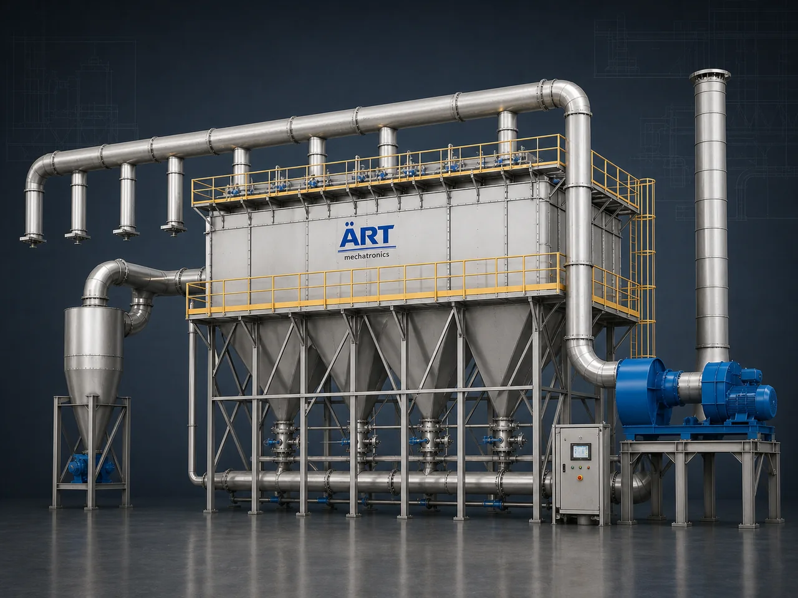

Centralized Dust Collection System (Industrial Dust Extraction & Air Pollution Control System)
A Centralized Dust Collection System, also known as an Industrial Dust Collector System or Central Dust Extraction System, is a highly advanced industrial air handling and pollution control solution designed for collecting, filtering, extracting, and controlling dust, powder particles, fumes, airborne contaminants, and process-generated pollution from multiple machines or production areas through a centralized filtration network.

About the Centralised Dust Collection System
The system improves:
- Workplace air quality
- Worker safety
- Product cleanliness
- Machine efficiency
- Environmental compliance
- Factory hygiene
Centralized dust collection systems are widely used in industries such as:
Food processing industries
Pharmaceutical industries
Chemical plants
Flour mills
Spice processing plants
Woodworking industries
Cement industries
Metal fabrication industries
Recycling plants
where continuous dust extraction and pollution control are essential for safe and efficient industrial operation.
The system works using:
- Dust extraction hoods
- Suction ducting network
- High-pressure blower systems
- Cyclone separators
- Bag filters
- Pulse jet filtration systems
to capture dust directly from the source and maintain a clean industrial environment.
Centralized dust collection systems are suitable for:
- Powder dust extraction
- Air pollution control
- Industrial ventilation
- Machine dust collection
- Pneumatic conveying exhaust filtration
- Fine particle filtration
ART Mechatronics offers high-performance centralized dust collection systems, engineered for high suction efficiency, low maintenance, energy-saving operation, and reliable industrial air pollution control.
Working Principle of Centralized Dust Collection System
Dust generated from multiple industrial machines and processing points Examples:
- Pulverizers
- Mixers
- Conveyors
- Packaging machines
- Grinding systems
- Screening machines
High-pressure blower creates suction through ducting network
Dust-laden air is captured directly from source points
Dust particles travel through centralized duct pipeline system toward filtration unit
Depending on system design, dust separation occurs using:
- Cyclone separators
- Bag filters
- Cartridge filters
- Pulse jet cleaning systems
Fine dust particles separated from clean air
Filtered clean air discharged safely into atmosphere or recirculated inside plant
Collected dust stored inside hopper or collection bins for disposal or recovery
Types of Centralized Dust Collection Systems
- 1. Bag Filter Dust Collection System
Uses: ✔ Fabric filter bags for fine dust filtration applications.
- 2. Pulse Jet Dust Collector System
Uses: ✔ Automatic compressed air pulse cleaning for continuous industrial operation.
- 3. Cyclone Dust Collection System
Uses: ✔ Cyclonic centrifugal separation for coarse dust handling applications.
- 4. Cartridge Filter Dust Collection System
Suitable for: ✔ Fine powder filtration and compact installations
- 5. Food Grade Dust Collection System
Designed for: ✔ Hygienic food and pharmaceutical industries
- 6. Heavy Duty Industrial Dust Extraction System
Suitable for: ✔ Large-scale industrial manufacturing plants
Industries Using Centralized Dust Collection System
🍃 Food Processing Industry Flour and spice dust extraction 💊 Pharmaceutical Industry Powder and API dust handling ⚗️ Chemical Industry Chemical powder pollution control 🌾 Flour Mill Industry Wheat and flour dust collection 🌶️ Spice Industry Masala powder dust extraction 🪵 Woodworking Industry Sawdust extraction and filtration 🏗️ Cement Industry Cement dust pollution control ⛏️ Mineral Industry Fine mineral dust handling systems
Features & Advantages
- Efficient dust extraction and filtration
- Improves workplace air quality and hygiene
- Reduces airborne contamination
- Protects workers and industrial machinery
- Centralized multi-machine dust handling
- Continuous industrial operation
- Heavy-duty industrial construction
- Low maintenance requirement
- Energy-efficient pollution control system
Technical Highlights
Filtration Technology: Bag filters Cartridge filters Cyclone separation Pulse jet cleaning Construction: Stainless Steel / Mild Steel Integrated Systems: Blower Ducting network Hopper system Rotary airlock valves Air Handling: High static pressure systems Operation: Semi-automatic Fully automatic PLC-based systems
Turnkey Dust Collection Solutions
ART Mechatronics offers: Complete centralized dust collection systems Dust extraction ducting design Cyclone and filtration integration Pneumatic conveying integration Installation & commissioning After-sales service & AMC
Why Choose Art Mechatronics
Expertise in industrial air pollution control systems Customized dust collection solutions for multiple industries High-performance and durable industrial construction Energy-efficient and reliable air handling systems Proven industrial performance across sectors
Applications
Food Processing Plants Pharmaceutical Manufacturing Units Chemical Processing Plants Flour Mills Spice Manufacturing Facilities Cement & Mineral Industries
Get pricing & specs for the Centralised Dust Collection System
Share the product, target capacity, current process and plant location. These details help our engineers discuss the right machine or line configuration.
One partner, from design to start-up
ART Mechatronics designs, manufactures, installs and commissions your Centralised Dust Collection System solution with regional presence in India, UAE and Thailand.